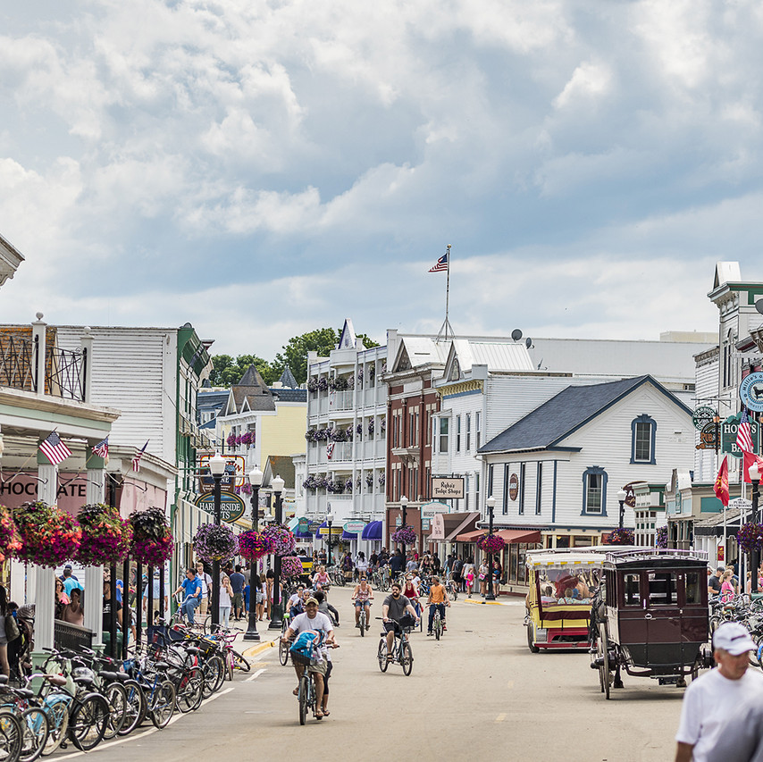
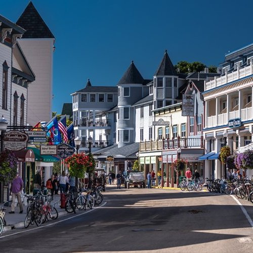
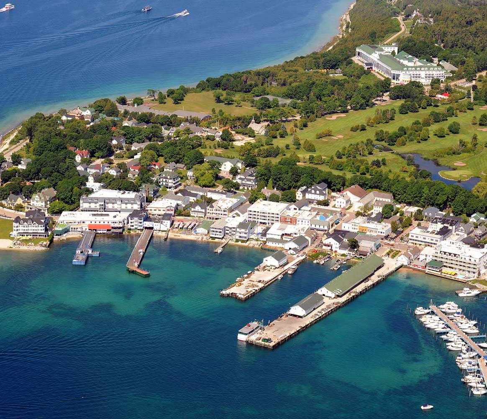

Yellowstone National Park is America's first and foremost National Park. Established in 1872 by the United States Congress for the preservation of its many wonders and for the enjoyment of the people.Yellowstone National Park - is located in the northwest corner of Wyoming, and includes small areas of Montana and Idaho as well. In addition to its superb Rocky Mountain scenery, the park is one of the world's principal wildlife preserves. It's also the site of America's greatest concentration of geysers and hot springs, which form a visible and spectacular link with the primeval forces of the Earth's creation.
Mackinac Island
Mackinac Island State Park was established in 1895. For twenty years before that it had been Mackinac National Park, the United States’ second national park. Today, over eighty percent of Mackinac Island is State Park property, and most of this park land remains in its natural condition to be enjoyed.
A great variety of historic and natural resources provides something of interest for every Mackinac Island visitor. Historic landmarks, breathtaking vistas, spectacular rock formations, quiet forests and inspiring nature trails are just minutes away. The sites are accessible by foot or bike, rented horse or buggy, sightseeing carriages or horse-drawn taxi.



Yosemite
Yosemite National Park is an American national park located in the western Sierra Nevada of Central California, bounded on the southeast by Sierra National Forest and on the northwest by Stanislaus National Forest. The park is managed by the National Park Service and covers an area of 748,436 acres and sits in four counties: centered in Tuolumne and Mariposa, extending north and east to Mono and south to Madera County. Designated a World Heritage site in 1984, Yosemite is internationally recognized for its granite cliffs, waterfalls, clear streams, giant sequoia groves, lakes, mountains, meadows, glaciers, and biological diversity. Almost 95% of the park is designated wilderness.